Scrinium · business-rule extraction
How Scrinium extracts rules from code,
This page explains the what, when and how of rule extraction. It was checked against the repository code on 11 November 2026. Timing and recall figures were measured with make bench on a 6 GB GTX 1060 with Qwen3-4B, on the pilot project reference-a.
References such as analysis/extraction.py:533 are relative to runtime/src/scrinium/, except those starting with ui/.
The short answer
A rule shows only a few lines because that is all that is stored. Each rule comes from one group of decision lines: for example an if (lives <= 0), plus any decision lines within 3 lines of it. That group is the rule's only citation, and the UI shows exactly those lines.
Scrinium knows where every function starts and ends, and which names it calls. It does not use that knowledge to explain the code or to relate rules to each other. The relationship and flow tables exist, but nothing fills them, so the "Map" screen shows a single column of rules with no arrows.
1 · What
What a rule is, and what is stored about it
The definition the model uses. A business rule is "a domain decision that the code implements: a limit, a validation, a calculation, a permission, a state change". Drawing, sound, UI and implementation details do not count. analysis/extraction.py:122-125
The definition the code applies. Before the model is called, a possible rule is a decision group: lines within 3 lines of each other that do one of these:
- compare against a threshold (a named constant or a number ≥ 2);
- apply a cap or a probability;
- reject (
throw/raise); - compute a formula with a constant;
- change a state.
analysis/candidates.py:164-179, 277-291, 334-346 The model answers each group with null, or with a title and a category. If it gives a title, that is a rule.
What is stored for each rule
| Data | Where | What it holds today |
|---|---|---|
| Identity | knowledge_entities | Key extracted/<normalized-title>: two rules with the same title are the same rule. Born proposed. review_reason is set when its code changes. analysis/extraction.py:312-314 |
| Category | business_rules | One of 10 three-letter codes chosen by the model (val, cal, est…). analysis/extraction.py:161, 165-171 |
| Criticality | business_rules | Always medium. The model no longer proposes it; a person decides. analysis/extraction.py:571-572 |
| Title | business_rule_versions | Between 12 and 60 characters, cut at a whole word. analysis/extraction.py:101-102, 174-181 |
| Statement | business_rule_versions | First "Pendiente de redactar. Código: <line>" (pending, plus the decision line). Then a sentence of at most 160 characters (phase 2). analysis/rule_detail.py:42, 97-99 |
| Scope | business_rule_versions.scope | Only the file path. analysis/extraction.py:564 |
| Preconditions, triggers, expected behaviour, exceptions, impact | business_rule_versions | Empty. The columns exist, but extraction does not fill them. infrastructure/sqlite/models.py:513-517 |
| Rationale | business_rule_versions.rationale | Only when the model adjusts a rule because its code changed ("Before: …"). analysis/extraction.py:643-650 |
| Evidence (citation) | evidence_records | One per version: path, commit, start and end lines, and an excerpt of up to 2000 characters. Method llm_proposal, status unverified. knowledge/evidence.py:126-200 |
| Versions | knowledge_entity_versions | One version per change, with the model and the extractor: rules-map-1 (phase 1), rules-detail-1 (phase 2), rules-verdict-1 (reviewed after a code change). Each new version copies the previous one's citations. analysis/rule_detail.py:39-40, 279-294 |
Which tables exist, and who writes them
| Table | State | Who writes it, and why |
|---|---|---|
code_symbols | in use | Sync, with tree-sitter: functions, methods and classes with their lines, logic_hash and the calls list (called names). ingestion/sources.py:312, retrieval/structure.py:22-45 |
extraction_tasks | in use | The extraction queue: one task per candidate chunk, with its fingerprint. sqlite/models.py:345-371 |
business_rules, business_rule_versions, evidence_records | in use | Extraction (phases 1 and 2), manual rule creation and verification. |
findings | other analyses | Code diff, consistency, SQL, release comparison, bug investigation and answers. Extraction writes no findings. |
entity_relationships | empty | Nobody. add_relationship exists and validates cycles and symmetry, but only tests call it. The map, the rule detail and the diff analysis do read it. knowledge/evidence.py:287, knowledge/views.py:128, 229 |
flow_definitions, flow_versions, flow_steps, flow_transitions | empty | Nobody. create_flow exists and only tests use it. The "Map" screen already has a "Processes" section that would show them. knowledge/entities.py:298 |
2 · When
What triggers extraction, and in what order it runs
- The "Extraer reglas automáticamente" button on the Rules screen.
- Optional folder, and an option to read every function (threshold 0).
- Only one extraction per project at a time; another returns 409.
- After a sync.
- It always flags the rules whose code changed.
- It launches extraction, on what changed only, if the project already had completed tasks, no other extraction is running, and the model is ready.
- The first extraction is never automatic.
- At startup. Continues extractions with pending tasks, and missing statements. cli/main.py:278-280, analysis/extraction.py:904-923
- Phase 2 in the background. When the map finishes, a separate analysis is queued: "Redactar los enunciados de las reglas". analysis/extraction.py:940-944, 820-835
- Phase 2 on demand. Opening a rule without a statement makes the UI request it, and it is written right away, ahead of everything else. api/knowledge.py:173-191, analysis/extraction.py:869-901

Incremental extraction (T5)
Each candidate chunk is a task with a fingerprint: path, function, logic_hash and part number. The logic_hash is computed over the syntax tree's tokens without comments, so changing only formatting or comments does not change the fingerprint. analysis/extraction_queue.py:26-34, infrastructure/code_structure.py:142-154
- A completed task whose fingerprint did not change does not go back to the model.
- Tasks whose code no longer exists are deleted.
- A failed batch is retried in the next extraction, and dropped after 2 attempts. analysis/extraction_queue.py:23, 50-105, 117-121
- Rule watch: if the
logic_hashof the function behind a rule changes:- the rule is flagged "Review";
- the new function goes to the model together with that rule;
- the model says whether the rule still holds, is adjusted (with a new statement), or is no longer met.
What T5 proposed as new, a result cache shared across projects or branches, is not done.
3 · How
The path, step by step


Chunking and indexing
On sync, each file is split into chunks of 60 to 80 lines, without overlap, for search and questions. retrieval/chunking.py:14-16, 45-68
Tree-sitter also extracts the functions, methods and classes of 11 languages, with their lines, two fingerprints and the names each one calls. infrastructure/code_structure.py:32-44, 157-205
For rules, the unit is the function. Chunks are only used for SQL and languages without a grammar. analysis/candidates.py:463-500
Which files go in
Only code, schemas and tests, by extension. Tool and agent folders (
.claude,.github,.vscode…) are excluded. analysis/candidates.py:115-138, 439-448, 475-479Tests are left out: they check rules, they do not hold them. They are not extracted, cited, embedded or searched, unless search is told to include them in Settings. domain/paths.py
The decision-line filter (F10,
score_text)A function's score is its number of decision lines, capped at 6. analysis/candidates.py:317-344
- It loses 3 if it has more drawing lines than decision lines.
- It gains 1 if it is small (15 lines or fewer).
- It loses 2 if its path or name belongs to UI, drawing or sound. analysis/candidates.py:407-412
A decision is written differently in a game and in a business system, and the filter knows both. In business code it also counts a guard on a state field or a failed check (
if (!user.isActive),if (!isAllowedEmail(…))), an equality with an upper-case status or role (role === 'ADMIN', SQLstatus <> 'DRAFT'), a schema constraint (check(,CHECK (), a permission string ('users:manage') and an HTTP refusal (status(403)). SQL keywords count in capitals. An explicit refusal (throw,RAISE, a 4xx status) or a database function or trigger adds 1. analysis/candidates.py, _GUARD, _REJECTIONIn files with a grammar, the stretches no function covers are candidates too: a schema's constraints, a role-to-permission table and the routes that require a permission live there. A call opened on a decision line (
check(with its condition below) is cited whole, up to 6 lines. analysis/candidates.py, _outside_functions, _call_endWith the default threshold (2), a function without decisions never reaches the model. Functions over 6000 characters are split before scoring. analysis/candidates.py:41-43, 415-436
Windows and batches
From a function over 40 lines, only ±6-line windows around each decision line are sent. Windows 2 lines apart or less are merged. analysis/candidates.py:233-234, 383-404
Chunks are sorted by score and packed into batches of at most 8000 characters and 24 decision groups. analysis/extraction.py:94-97, 400-416
The prompt and the grammar
How the prompt is built: analysis/extraction.py:114-146, 435-494
- The system prompt is fixed, to make use of the cache.
- Each source goes between delimiters with a random value, so the code cannot give orders to the model.
- Lines are numbered, with compacted indentation and no blank lines.
- Decision lines carry
», and the list of decisions goes at the end of the message.
What the model sees (the markers are in Spanish in the real prompt):
<<FUENTE 1 9f3a…>> ruta: src/game.ts, funcion: Game.loseLife 41|loseLife() { 42| this.lives -= 1 43|» if (this.lives <= 0) { 44|» this.state = 'over' 45| } <<FIN 9f3a…>> Decisiones (1; una respuesta por cada una en "d"): D1 (lineas 43-44): if (this.lives <= 0) {The grammar forces exactly one answer per decision, in order:
{"i":"D1","r":null}or{"i":"D1","r":{"c":"est","t":"Fin de partida sin vidas"}}. The model can neither skip a decision nor invent one (R1b). analysis/extraction.py:252-273Citations, validation and storage (F6/F6b)
Numbering continues from one source to the next within the batch, so each number is a single line of a single file. analysis/extraction.py:242-249
The model no longer writes the citation: the citation is the decision group. analysis/extraction.py:533-573
On storage, the code checks that the lines exist in that revision and that there are no more than 200 of them. If a rule with the same title exists, a version is added to it. knowledge/evidence.py:151-155, analysis/extraction.py:576-620
Phase 2 context (
CONTEXT_LINES)For each map rule, phase 2 takes its first citation:
- it marks the cited lines and adds 4 lines around them;
- it keeps at most 16 non-empty lines and 900 characters;
- it sends 12 rules per batch, and the grammar asks for one statement per rule.
analysis/rule_detail.py:43-50, 102-116, 191-249
4 · Few lines
Why only a few lines are shown

One citation per rule, on purpose (S2). Writing is the expensive part on this GPU (about 2.3 s per rule with the earlier format), so everything the model wrote was trimmed. The model no longer writes the citation: it is the decision group, usually one to a few lines. If a chunk has no domain decision at all, the group is the whole chunk, and then the citation is longer. analysis/candidates.py:346
±6-line windows. The model never sees a function over 40 lines in full. It sees cut-outs around each decision, and answers each one separately.
The batch cap no longer cuts rules. There used to be a cap of 6 rules per batch, which dropped rules the model had seen. With R1b the cap is 24 decisions per batch, and every decision gets an answer. Today the cap only decides where a batch ends.
Neither the function nor its relationships are stored. A rule stores the path and the lines of its group. It does not store the function that contains it, who calls that function, or the other rules in the same function. code_symbols knows all of that, but the rule does not record it.
The UI shows the citation in its context. Each rule card reads the cited lines plus 4 above and below, numbers them, marks the cited ones and colors them with the VS Code grammar of the file. There is still no button to see the full function. ui/src/components/code-excerpt.tsx The "Relaciones" section of the rule detail only appears if the rule has a relationship, and today none does. ui/src/screens/RulesScreen.tsx:822-823
What the "Map" is today
The word "map" has two uses in Scrinium, and they should not be mixed up:
- The rule map (phase 1) is the list of rules with title, category and citation, before they have a statement.
- The "Mapa" screen was removed. It drew rule relationships as facts, and a hand review found 14–24 % of them wrong. The relationships stay in
entity_relationshipsand feed the rule detail ("Si cambia esta regla") and Impacto. A map comes back only as processes built without the model from entry points (routes, commands, handlers), and only if it passes its own measurement.
5 · Limits
What it does not do
- It does not understand the flow between functions.
- It stores the names each function calls, but only the last part (
this.game.end()becomesend). infrastructure/code_structure.py:120-133, 157-159 - It does not resolve which function a name refers to, and does not read
imports. - Those calls are not used yet.
- It stores the names each function calls, but only the last part (
- It does not relate rules to each other.
- Each decision group is judged on its own. Two rules in the same function, or a rule and the one that validates its input, are not linked.
- Duplicates are merged only if their normalized titles match exactly.
- It gives no module or architecture view.
- There is no summary of a function, file, folder or the system.
- There are no dependencies between modules.
- The
moduleandservicetypes exist in the data model, unused.
- It does not follow data or execution. It does not know what comes in through an endpoint or what ends up in the database. It does not see behaviour that depends on configuration or runtime.
- It does not use documentation or tickets. Documentation is left out of extraction. Tickets are not linked to rules.
Rules are the bottom layer of understanding a codebase. The layers above them are only partly built:

How much it finds, measured
| Measure | reference-a (game) | reference-b (GRC API) | What it means |
|---|---|---|---|
| Reference rules | 48 | 30 | Reviewed by the owner. |
| Filter recall | 45 (0.938) | 29 (0.967) | Rules whose lines reach the model. Lost: afterDoor, pack and a crumb echo in the game; the sign-in hook in reference-b. |
| Extraction recall | 39 of 47 (0.83) | 23 of 30 (0.77) | On the reference sample, two-phase setup. |
| Precision | 48 of 50 real (0.96) | not reviewed | Reviewed by hand on one sample; 46 of 50 were also well worded. |
| First extraction time | ≈ 27 min | ≈ 4 min | Map plus statements on the GTX 1060, estimated from the sample. After that, only what changes. |
| 1.7B model for the map | 9 of 28 | — | 2.6 times faster, but loses almost two thirds of the rules: rejected. |
| Parallel batches | −2 % with 2 slots | — | The GTX 1060 is already saturated: not worth it. |
Reference lists: runtime/benchmarks/golden/reference-a.json and reference-b.json. Before the filter learned business code, reference-b's filter recall was 0.40: guards, SQL in capitals and code outside functions never reached the model.